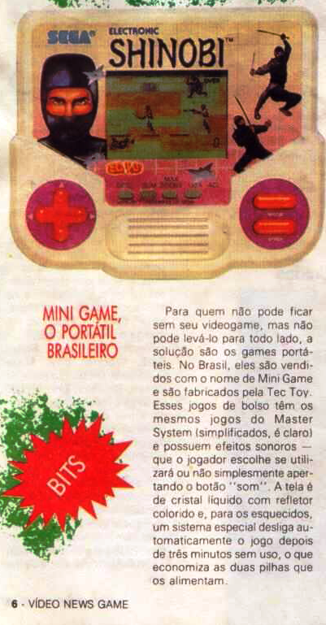

Lançamento do Game Gear
:::. Texto Gigacom!
:::. Pesquisa Rebirfh
fonte: Videogame nº 1
Lembra daqueles mini games que vendiam horrores em feirinhas? Só para trazer mais
nostalgia aí na sua cabeça, lembra que tinha o joguinho
de corrida, tenis, basquete, barquinho hehehe, ó céus,
como dar nome para as coisas na infância era mais simples. Na
verdade, não havia só esses minigames de feirinha, tinham
os oficiais mais caros nas lojas de shoppings, que eram geralmente modelos fabricados pela
Casio e Nintendo. E tinha tudo quanto é tipo de jogo,
não só esportes, mas tambem alguns bem interessantes como
o minigame do primeirissimo Donkey Kong da Nintendo, que mais parecia
um DS (uma tia minha tinha um desses, nem sabia o nome do jogo na
época, mas era um dos minigames mais chiquetosos de todos  ). Outros modelos vinham em formato relógio de
pulso, enquanto que alguns eram parecidos com um Transformer e por aí
vai. Aliás, a maioria desses aparelhinhos possui uma
perninha de metal atrás, que serve para apoiar o bichinho e
deixá-lo em pé onde quer que seja, para servir de
relógio e enfeite
). Outros modelos vinham em formato relógio de
pulso, enquanto que alguns eram parecidos com um Transformer e por aí
vai. Aliás, a maioria desses aparelhinhos possui uma
perninha de metal atrás, que serve para apoiar o bichinho e
deixá-lo em pé onde quer que seja, para servir de
relógio e enfeite  .
.
Enfim, o negócio era bom mesmo,
e vendia bastante. Foi aí que a Tec Toy, que na época era
bem mais esperta e dinâmica que a Treco Toy de hoje, correu
atrás e trouxe pra cá os famosos minigames da Sega.
Tá tá, o mais sabidinho dos leitores vai saber que os
minigames não eram beeeeeem da Sega, e sim de uma empresa
chamada Tiger (nome não tão original, mas tá
valendo nesse caso), e a Tec Toy comprava a licença do projeto
de cada minigame, para produzir lá em Manaus. O resultado
é que, como o ditado diz, QUEM NÃO TEM GAME GEAR, JOGA
COM MINI GAME ORAS! Os minigames da Tec Toy eram um show, tinham
qualidade e o chamativo de vários jogos de renome
como Sonic, Pit Fighter, Batman e muitos outros. Era baratinho, mas
nem tanto sabem... não custava dérreal, mas
não passava muito além dos 50 para os padrões de
hoje. De qualquer forma, muita gente ganhava um desses no
aniversário, eu mesmo ganhei um Sonic 2 da minha mãe, num
aniversário que nem lembro qual, mas que até hoje me
deixa saudades  .
.
E eis que o lançamento desses aparelhinhos aqui no Brasil mereceu obviamente uma nota na revista Videogame nº 1!

A Tec Toy divulgava bastante
esses aparelhinhos, e logo todo mundo passou a conhecer eles. As vezes até alguma menina
aparecia com um e provocava senção por onde
passava (é que videogame naquela época era coisa mais
restrita ao mundo masculino sabem...  bons tempos...). Hoje até que dá para encontrar um minigame por aí nos Mercado Livre, mas não
costumam ser baratos não. Porém para quem nunca teve e quiser
possuir um, eu particularmente recomedo a compra, mas não
vá depois querer me processar se não gostar do jogo hein!
bons tempos...). Hoje até que dá para encontrar um minigame por aí nos Mercado Livre, mas não
costumam ser baratos não. Porém para quem nunca teve e quiser
possuir um, eu particularmente recomedo a compra, mas não
vá depois querer me processar se não gostar do jogo hein!
Acesse o Trombone e comente sobre essa matéria!